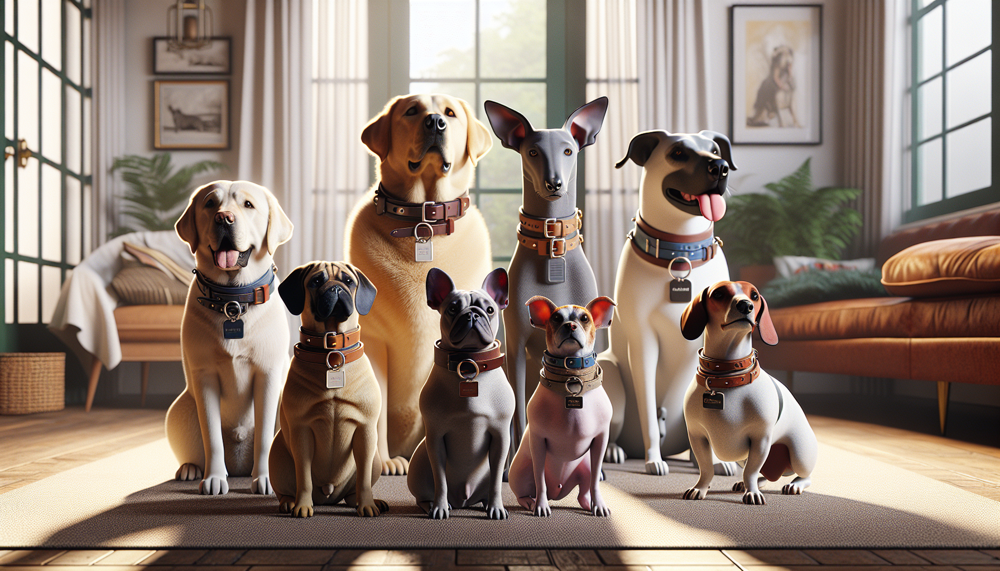

Choosing a dog collar sounds simple at first—until you realize just how many options are out there. Flat collars, martingale collars, leather, nylon, buckle styles, width options, personalized tags, breakaway features, waterproof materials... the list goes on. And when you add your dog’s breed, size, coat type, energy level, and daily routine into the mix, picking the right collar becomes a much more important decision than many pet owners expect.
The truth is that the best dog collar is not just about looks, although style definitely matters. A great collar should fit comfortably, support your dog’s needs, match their breed traits, and help keep them safe every day. Whether you are bringing home a new puppy, upgrading your current collar, or shopping for a thoughtful gift for a dog lover, this guide will help you choose the right dog collar for your breed with confidence.
Different breeds have different body shapes, neck sizes, coat types, and activity levels. That means the collar that works beautifully for one dog may be completely wrong for another. Before you shop, think about your dog’s overall build rather than focusing on breed name alone.
Small breeds like Chihuahuas, Yorkies, Toy Poodles, and Maltese usually do best with lightweight collars that do not feel bulky around the neck. A collar that is too wide or heavy can be uncomfortable and may even affect how they move.
Medium breeds like Beagles, Cocker Spaniels, Border Collies, and Bulldogs often need a balance of durability and comfort. These dogs can vary widely in neck shape and coat thickness, so fit matters a lot.
Large and giant breeds like Labrador Retrievers, German Shepherds, Golden Retrievers, Great Danes, and Rottweilers need stronger collars with sturdy hardware. Their collars should be able to handle daily wear and occasional pulling without compromising comfort.
Then there are uniquely shaped breeds. Greyhounds, Whippets, and Salukis have narrow heads and wider necks, which makes slipping out of standard collars more likely. Dachshunds may benefit from lightweight options because of their smaller frames. Thick-coated breeds like Huskies and Bernese Mountain Dogs need collars that sit comfortably without matting fur.
Not every dog collar serves the same purpose. Some are ideal for everyday identification, while others are better for training, walking, or dogs with specific body types.
The most common option is the flat collar. This is the everyday classic and works well for many dogs. It is great for holding ID tags and wearing around the house or on casual outings. For dogs who walk nicely on a leash and do not tend to back out of collars, a flat collar is often a practical choice.
Martingale collars are especially helpful for breeds with slim heads, such as Greyhounds and Whippets, because they tighten gently when needed to prevent slipping out. Many pet owners also like them for dogs that are still learning leash manners.
Rolled collars can be useful for long-haired breeds because they may reduce matting compared with flat, wide designs. Personalized collars are another favorite because they combine style with function by displaying your dog’s name and your contact information directly on the collar.
For highly active dogs, waterproof or adventure-ready collars may be the best option. Dogs who love swimming, hiking, mud, and rain need collars that can handle wear and clean up easily.
Even the most beautiful collar is the wrong choice if it does not fit properly. A collar that is too tight can cause discomfort, chafing, and breathing issues. A collar that is too loose can slip off when your dog gets excited or startled.
A good rule is the two-finger test: you should be able to fit two fingers comfortably between the collar and your dog’s neck. This helps ensure the collar is snug enough to stay on but loose enough to remain comfortable.
Breed plays a major role here. Thick-necked breeds like Bulldogs and Mastiffs may need wider collars for better pressure distribution. Delicate breeds like Italian Greyhounds need soft, lightweight options. Puppies also need frequent collar checks because they grow quickly, and a collar that fit last month may be too tight now.
Be sure to measure your dog’s neck before buying. Do not guess based on breed size charts alone. Two dogs of the same breed can have very different measurements.
Dog collar materials affect comfort, durability, maintenance, and style. The best choice depends on how your dog lives day to day.
Nylon collars are popular because they are lightweight, affordable, and available in endless colors and patterns. They are a great option for many everyday dogs and work especially well for puppies and casual wear.
Leather collars offer a classic, timeless look and can become softer over time. They are often a favorite for pet owners who want a polished style or are shopping for a gift. Quality leather collars can be durable and comfortable, but they do need proper care to stay in good condition.
Waterproof coated materials are perfect for dogs who spend lots of time outdoors. If your Labrador loves the lake or your Spaniel finds every muddy puddle in the park, a waterproof collar can make your life much easier.
Soft padded collars can be excellent for dogs with sensitive skin or short coats that are more prone to rubbing. If your dog has experienced irritation before, look for smooth seams and breathable linings.
Your dog’s breed gives you a starting point, but personality matters just as much. Is your dog calm and easygoing, or energetic and always on the move? Do they spend most of their time indoors, at daycare, on hiking trails, or meeting new friends at the dog park?
An active dog may need stronger hardware and more durable stitching. A mellow senior dog may prefer a soft, lightweight collar that feels barely there. A social dog who goes everywhere with you might benefit from a stylish personalized collar that is both functional and photo-ready.
Think about visibility too. If your dog is often out in the early morning or evening, reflective details can add an extra layer of safety. If they attend training classes, choose a collar that is easy to clip on and off quickly.
For gift shoppers, this is where a collar becomes extra special. Choosing a collar that reflects a dog’s personality—playful, elegant, outdoorsy, or charmingly spoiled—turns an everyday item into a meaningful gift.
Yes, function comes first—but style absolutely deserves a place in the conversation. After all, your dog wears their collar every day. It should feel like an extension of their personality.
Color can complement your dog’s coat beautifully. Deep blues and greens can look stunning on golden or cream-colored dogs. Bright pinks, reds, and floral prints can add charm to small breeds. Neutral leather tones offer a sophisticated look for larger dogs and classic breeds.
Personalized collars are especially useful because they combine fashion with peace of mind. If your dog slips out the door or gets loose on a walk, having your contact details on the collar can make a huge difference. Many pet owners love personalized collars because they reduce the need for noisy dangling tags while still helping with identification.
Pay attention to hardware as well. Strong buckles, secure D-rings, and quality stitching matter more than many people realize. These details affect both safety and longevity.
When it comes to choosing the right dog collar for your breed, there is no one-size-fits-all answer—and that is actually a good thing. The ideal collar should reflect your dog’s build, breed traits, comfort needs, activity level, and personal style. A tiny companion dog, a sleek sighthound, a fluffy mountain breed, and an adventurous retriever all need something a little different.
By focusing on fit, material, collar type, and everyday practicality, you can find a collar that helps your dog stay safe, comfortable, and unmistakably themselves. And if you are shopping for a gift, a thoughtfully chosen personalized collar is one of those rare presents that feels both useful and heartfelt.
Ready to find something special for your favorite pup? Shop personalized pet products at SnoutAndAbout on Etsy.